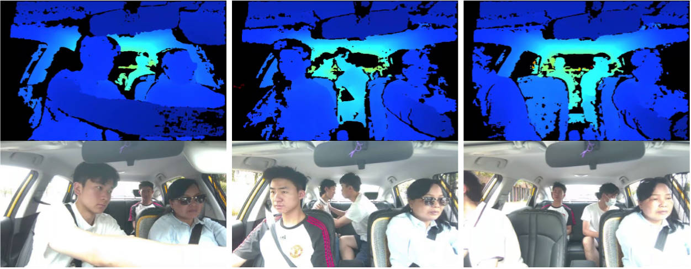

Benchmark for Interpersonal Interaction Anomaly Detection in Real Traffic Scenes
Industry project. Collected anomaly behavior data from real operational traffic scenarios and created a benchmark for evaluation. First author submission to IEEE TITS (under review).